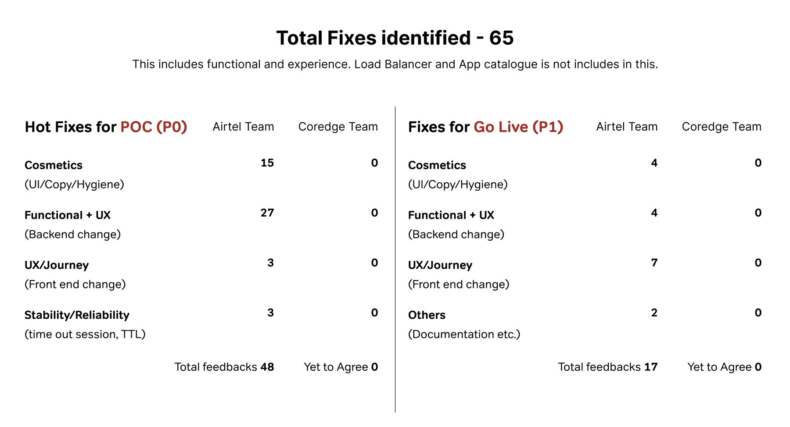
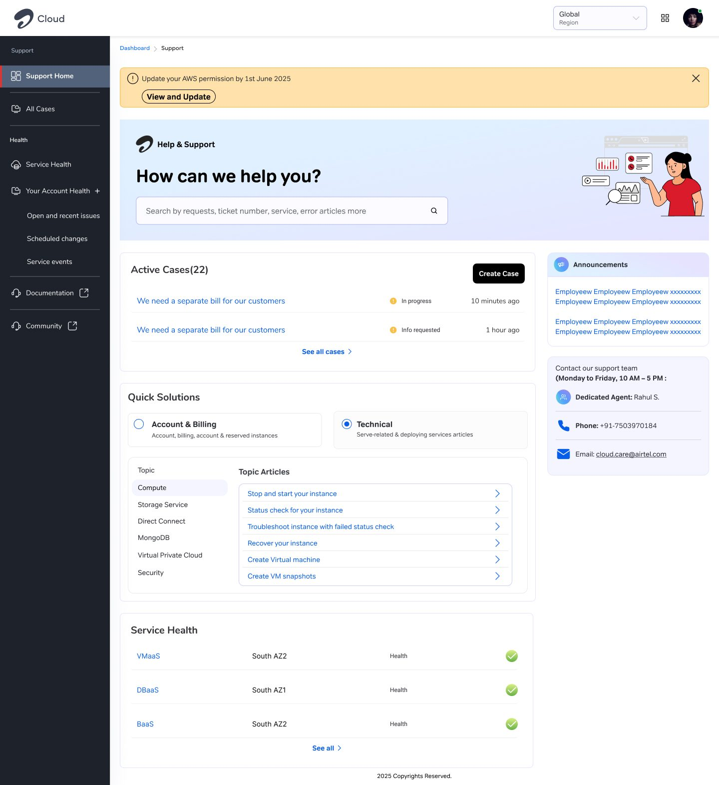
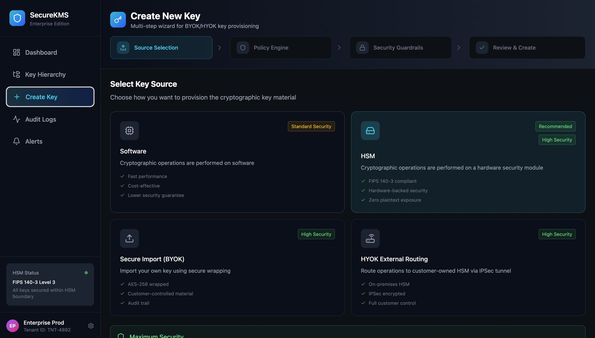
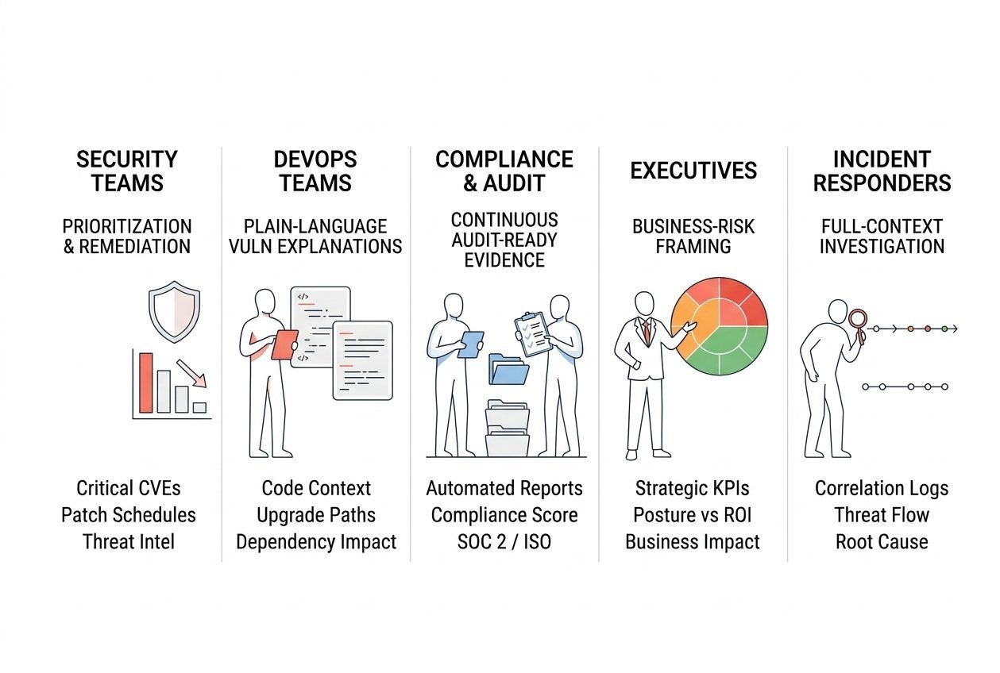
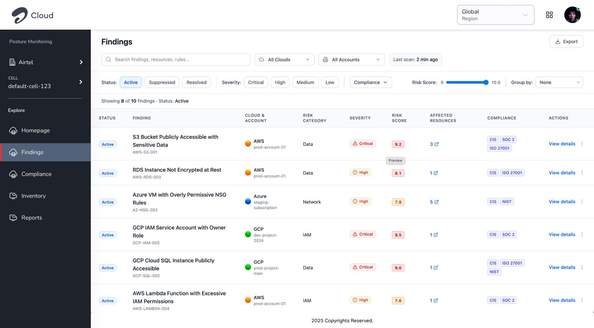

Airtel Cloud is Airtel's enterprise cloud platform: compute, storage, security, cost and migration services for business customers. It launched in August 2025 and now has more than 40 live services.
Design lead for Airtel Cloud, from the pre-launch audit to today. I own the research and design decisions, work hands-on, and use AI tools for much of the execution.
Senior Lead Product Designer, Airtel
Aug 2025 – ongoing
Why the Cloud platform?
Airtel launched Cloud with 18 enterprise clients and a target of 50 by 2027, with contract value expected to grow about tenfold, to ₹180 crore (sales forecast). The bet was to launch on time and let real usage decide what to build next. By October 2026 it had 35 clients.
No single team controlled the product. A partner designed and built the core console, key management and the first support flow. An external team built posture monitoring. Internal developers built Cost Analyser and CloudFerry migration. That's normal for an enterprise platform: each product is led by its own experts with their own engineers. So every improvement had to be earned, not mandated.
Airtel is now bringing the platform in-house. An internal team built a shared micro-frontend from the component library: every new service is built on it, and existing tools move onto it over time.
The problem: a platform that couldn't explain itself
The biggest usability risk wasn't a missing feature. It was inconsistency on the fields customers touch first, a security tool that could show everything but couldn't say what to fix first, and a support flow that pretended one team owned a journey that crossed several.
I started this project sure that everything should be unified. Research proved me wrong, and showed what to unify instead.
From auditing it to owning it
My role changed as the platform did: from reviewing a partner's build, to improving each tool on its team's terms, to designing the shared frame and new services myself.
Inherit: audit a platform I didn't design
Pre-launch · 50 of 65 fixes shipped
The partner had designed and built the console. My first job was to find what would hurt customers, and get it fixed through them.
I tested the console field by field before go-live and mapped the order-to-activation lifecycle end to end. The audit found 65 issues, including conflicting validation and undocumented limits. The partner fixed 43 before launch and 7 after. The other 15 depend on services that aren't live yet, such as global search and redirects between services.


Influence: improve each tool on its owner's terms
Assurance live since Jan–Feb 2026 · ~30% fewer tickets
I had authority over none of these teams. What worked was evidence, benchmarks and a design they could build from.
My role changed tool by tool
Each tool had a different owner, so I worked the way each team needed.
| Tool | Built by | What I did |
|---|---|---|
| Console | Partner | Audited it and got the UX and hygiene fixes shipped through the partner |
| Assurance (support) | Partner, on existing templates | Brought in by Airtel to fix the whole experience. Studied AWS and GCP, then designed the flow and screens with the partner |
| Key management (KMS) | Partner | Started from raw information, benchmarked other cloud providers and drafted the first flow; the partner adopted it in the platform |
| Posture monitoring (CSPM) | External team | A detailed evaluation that identified the experience gaps |
| Cost Analyser | Internal developers | They asked for help after building it: UX improvements and ideas, benchmarked against other cloud providers |
| CloudFerry (migration) | Internal developers | They asked for help: experience improvements and ideas for the migration flow |
| Price Calculator | My team, with internal developers | Built to my vision |
| Service documentation | Me | A page template for every service, with SOPs, plus the Airtel Cloud overview |
Support that solves problems before a ticket
The partner had built support on existing templates, and it shipped knowingly broken to protect the launch date. The Airtel team then brought me in to fix the whole experience. I studied how AWS and GCP handle support, wrote a proposal with five principles and three explored concepts, and designed the new flow and screens with the partner:
- Describe the problemA few details, not a long form.
- Try a suggested fixSolution steps and relevant articles pulled from the service documentation and SOPs.
- Raise it if still stuckOnly then add the extra details the support team needs.
- Track itA ticket page shows which team is solving it and the dedicated support person, with follow-up questions on the same ticket.
Result: around 73% of people who need help now open a suggested article first, and only those it doesn't solve go on to raise a ticket. Support tickets are down by about 30% since launch, against a goal of 10%.



Key management, security posture and cost
Key management (KMS) started as raw information with no design. I benchmarked other cloud providers and drafted the first flow, including the choice between Software, HSM, bring-your-own-key and hold-your-own-key. The partner later adopted that flow inside the platform.
Posture monitoring (CSPM) was built by an external team. My detailed evaluation, benchmarked against Azure Defender and Google Security Command Center across five personas, identified where the experience fell short, and reframed it from a reporting tool into decision support: what to fix first, and why.
Cost Analyser and CloudFerry were built by internal developers, who came to me for UX improvements and new ideas once their tools existed.




Unify: one frame, many tools
Live · 40+ services
The tools stay separate. The way you move between them, read about them and get help doesn't.
Unify the frame, not the tools
- What triggered it
- Tools from different teams felt like different products. My first instinct was to pull them all into one unified console.
- Evidence
- A study of how AWS, Azure and GCP structure their consoles: every major provider keeps tools deliberately separate, for permissions and cognitive load. The audit and the order-to-activation map showed the real problems were inconsistency and hand-offs, not the number of screens.
- Options
-
- One unified consoleMy starting hypothesis. Every team would rebuild around one interface, against how mature platforms handle permissions.
- Separate tools inside one shared frameOne top bar and service catalogue to move between services, one design system, one documentation template and one way to get help.
- My part
- The research and proposal, the common top bar and a service catalogue grouped the way the major cloud providers group theirs, the shared component library, and the documentation template.
- Who had to agree
- Product, the partner, the external and internal teams building each tool, and the engineering team that built the shared micro-frontend.
- What changed
- The top bar and catalogue are live across 40+ services, with single sign-on; finding and opening a service dropped from about 1.3 minutes to about 13 seconds, and every service has documentation on the template. The component library became the micro-frontend every new service is built on. Developers used to build each service's front end from scratch; with the shared boilerplate and the components I designed for it, which they reuse and adapt per service, front-end time and effort dropped by roughly 30–50%, by the front-end developer's estimate. A medium-sized service such as bare-metal storage took about 10 days for front end and API set-up once the backend was ready.
- Status
- Live across 40+ services Existing tools moving onto the shared front end
A service catalogue that groups like the big clouds do
Live services used to be scattered, with no single place to find them. I designed the service catalogue in the common top bar, grouping services the way the major cloud providers do, so customers meet a structure they already know. The groups are built to take new services without a redesign.
Every service is now linked from the catalogue, with single sign-on, so there's no separate login.
Result: finding the right service and getting into it used to take about 1.3 minutes on average, measured in a moderated test with 8 users on the old version. It now takes about 13 seconds, roughly six times faster.
Each with its own patterns and documentation, and no easy way to move between them.
- Top bar + catalogue
- Shared components
- One docs template
- One help flow
- Shared front end
Tools stay separate where permissions need it, but customers move, read and get help the same way everywhere. New services start on the shared front end.
Own: design new services from scratch
IAM in development · Observability in design
With the frame in place, I now design new services end to end with the product manager, instead of fixing them after they ship.
Identity and access management is the first Cloud system Airtel is building in-house, and the platform's real constraint: access had been assembled by hand. I'm designing it from definitions up, with no PRD to start from. It's the next case study.
Observability is next: I had specced it once, put it on hold so identity could come first, and am now designing it from scratch. More services will follow on the same frame.
Goals and early results
- At least 85% usability success on core platform tasks
- At least 80% success at discovering the right service
- 10% fewer support tickets caused by usability problems
| Goal | Target | Early result |
|---|---|---|
| Fewer support tickets | 10% fewer | ~30% fewer after the support redesign (all clients, 3 Jul – 3 Oct 2026) |
| Task success, core console | 85% | ~70% in a moderated test with 8 internal users provisioning VMs and storage, with time, queries and errors recorded. Not there yet; most remaining issues sit in global search and navigation, which depend on services not yet live |
| Finding and opening the right service | 80% success | Time to find and open a service: ~1.3 min → ~13 s on average. Success rate not measured separately yet |
Ticket figures come from support data across all clients, 3 July to 3 October 2026. Task success comes from the first moderated test since launch, with 8 internal users; there is no older baseline because metrics weren't instrumented at launch.
Influence without authority
Most of what slowed this down sat outside design. What got in the way, and how I worked around it:
I led with evidence — audits, benchmarks and prototypes — so teams adopted the design because it was right, not because they were told to.
Migrating it wasn't possible within the go-to-market timeline, so I started a shared component library. Every team now builds with it, and engineering turned it into a micro-frontend boilerplate so new services go live faster.
I benchmarked other cloud providers and drafted the first flow myself, rather than waiting for someone else to interpret it.
Mapping the lifecycle first showed a better form wouldn't fix it; it needed a cross-system journey.
Early figures come from support data and task-success checks after launch. Console task success (~70%) is still below the 85% goal.
What I gave up, on purpose
Most of the important calls on Cloud were about what not to do.
| Decision | What I gave up | Why |
|---|---|---|
| Launched with a knowingly broken Assurance | A good support experience at launch | Protected the go-live date; rebuilt it once real usage showed where to invest |
| Unify the frame, not the tools | One seamless console | Mature cloud platforms keep tools separate for permissions and cognitive load; a shared top bar, catalogue and design system make them feel like one product |
| Component library instead of migrating the existing build | Immediate visual consistency | Migration wasn't possible within the launch timeline; every team now uses the library |
| Self-service first, support form last | The quickest route to raising a ticket | Most issues can be fixed with guidance; escalation stays one step away |
| Put a finished Observability spec on hold | Visible, demo-ready work | Identity and access was the platform's real constraint; Observability is now being designed again |
| Three-phase roadmap, Phases 2–3 deferred | Fixing everything at once | Phase 1 could start in-house now, with the rest sequenced |
The impact
How we measured: tickets and article opens from support data across all clients, 3 July to 3 October 2026. The 1.3-minute baseline comes from a moderated test with 8 users on the old version. Task success comes from a moderated test with 8 internal users. The 30–50% is the front-end developer's estimate.
What shipped, and what's next
| Work | Status |
|---|---|
| Pre-launch audit fixes | 50 of 65 shipped 15 waiting on other services |
| Assurance: the new help and ticket flow | Live since Jan–Feb 2026 |
| Key management, from my first draft | Live |
| Price Calculator | Live |
| Common top bar and service catalogue | Live |
| Service documentation template | 40+ services |
| Shared component library → micro-frontend | Every new service · 30–50% less front-end effort Existing tools moving over |
| Posture monitoring, Cost Analyser, CloudFerry | Recommendations with their teams |
| Identity and access management | In development · target Jan 2027 |
| Observability | In design |
Unify what people touch, not what teams build
Forcing every tool into one console would have fought how each team works and how cloud permissions behave. Unifying the frame (navigation, documentation, help and components) gave customers one product without asking every team to rebuild.
What I'd do differently: push to sequence identity and access before launch, rather than discover the need a year in. The harder discipline was saying no to my own finished work and my own starting strategy.